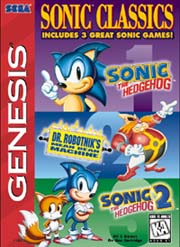

Sonic HQ - The Games Page
Sonic Classics / Sonic Compliation

Super Speed! Bust the video game speed barrier wide open with Sonic The Hedgehog. Blaze by in a blur using the super Sonic spin attack. Loop the loop by defying gravity. Plummet down tunnels, then dash to safety with Sonic's power sneakers. All at a frenzied pace. Super Graphics! Help Sonic escape bubbling molten lava. Swim through turbulent waterfalls. Scale glistening green mountains and soar past shimmering city lights. There's even a 360' rotating maze. Super Attitude! Sonic has an attitude that just won't quit. He's flip and funny, yet, tough as nails as he fights to free his friends from evil. One thing is for sure, Sonic's our hero!
Sonic Compilation; a classics cartridge containing the original Sonic the Hedgehog, Sonic the Hedgehog 2, and Dr. Robotnik's Mean Bean Machine; was released for the Sega Mega Drive in Europe in July of 1995. It was not until August of 1997 that this game was released in the US under the name "Sonic Classics". Basically this game was the last "Sonic-related" game for the Genesis in the US. Listed below are the related links to help you get through the game.
Sonic The Hedgehog 1
Dr. Robotnik's Mean Bean Machine
Sonic The Hedgehog 2